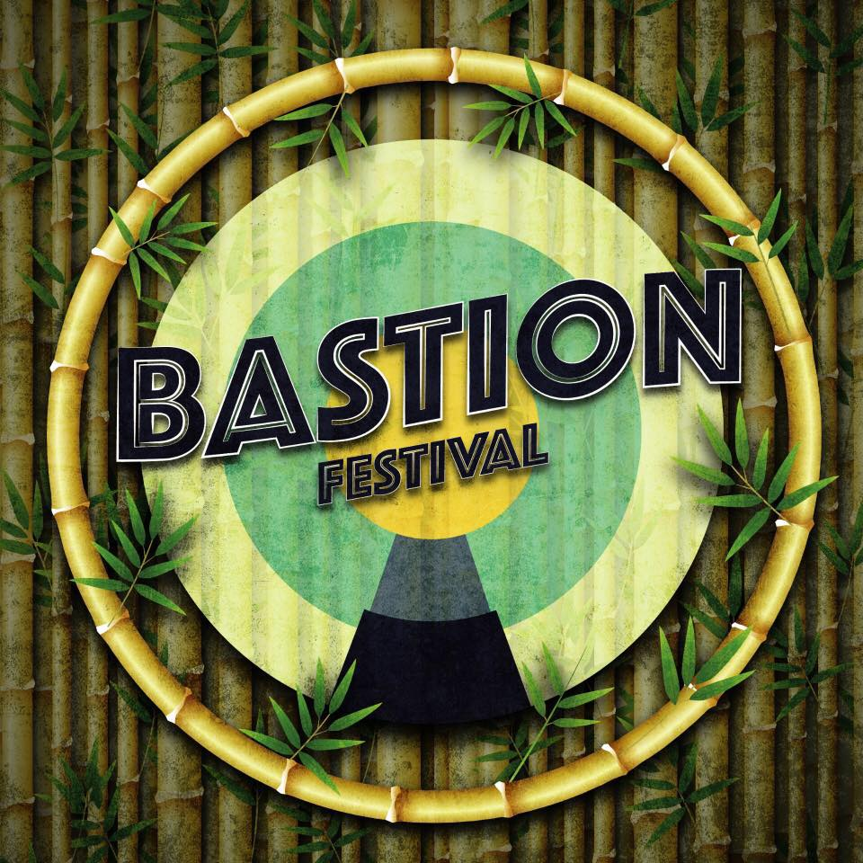

Pukkelpop
Pukkelpop is een jaarlijks terugkerend Belgisch popmuziekfestival in Kiewit, Hasselt. Het festival vindt gewoonlijk plaats in de tweede helft van augustus en duurt 3 dagen. Het festival wordt georganiseerd door The Factory vzw van onder anderen festivalorganisator en ex-politicus Chokri Mahassine. Pukkelpop kiest bewust voor een progressieve muziek- en randprogrammering.

Terug naar boven
Rock Werchter
Rock Werchter is een pop- en rockfestival dat elk jaar plaatsvindt in het dorpje Werchter, een deelgemeente van het Vlaams-Brabantse Rotselaar. Het Belgische muziekfestival vindt plaats in het laatste weekend van juni of het eerste van juli. Het is het grootste van België en een van de grootste en bekendste van de wereld. Tot 1999 ging het om een dubbelfestival (Torhout-Werchter) dat jaarlijks plaatsvond en waarbij enkele edities zowel in Werchter als Torhout werden gehouden. De benaming "TW" is nog terug te vinden in de naam TW Classic, een ander muziekfestival dat enkele weken voor of na Rock Werchter plaatsvindt op dezelfde locatie.

Terug naar boven
Tomorrowland
Tomorrowland is een grootschalig Belgisch outdoor dance-evenement in De Schorre in Boom georganiseerd door WEAREONE.world, een onderneming van de broers Beers en tot eind 2013 een joint venture met het Nederlandse bedrijf ID&T. Na de overname van ID&T door het Amerikaanse bedrijf SFX kochten de gebroeders Beers in 2013 zelf de aandelen van hun voormalige partner op waarmee ze zelf enige eigenaar werden van de organisatie.

Terug naar boven
Terug naar boven
Bastionfestival
Bastionfestival is een kleinschalig festival te Bastion Kessenich in Kinrooi. Diverse lokale en internationale artiesten treden overheen twee dagen op. Er zijn hierbij zowel artiesten voor (heel) jong als oud. Daar het familiefestival is zijn de ticketprijzen nog zéér democratisch, namelijk tussen de 15 en 30 euro.
Terug naar boven